Draw & Guess
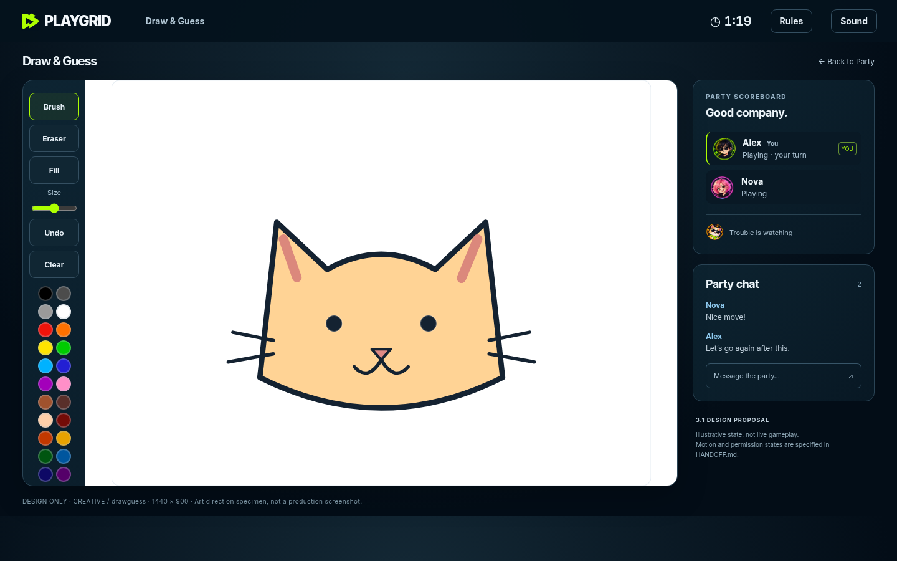
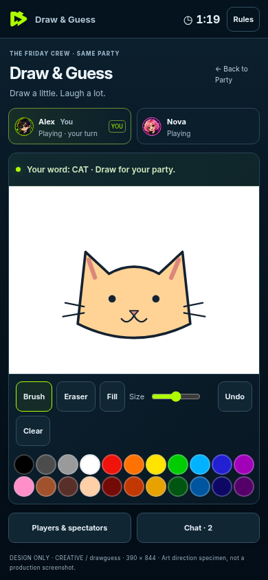
Four in a Row
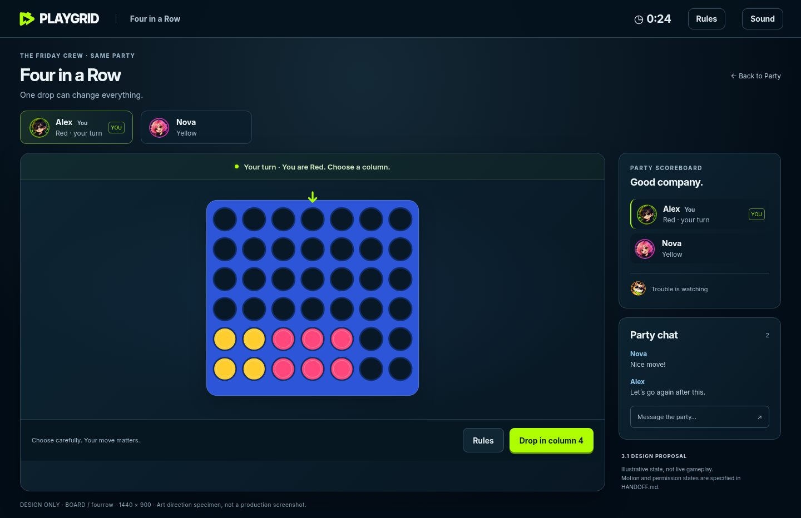
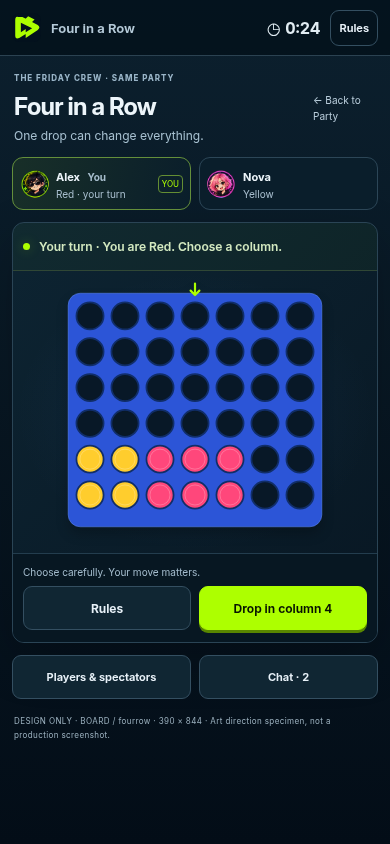
Chess
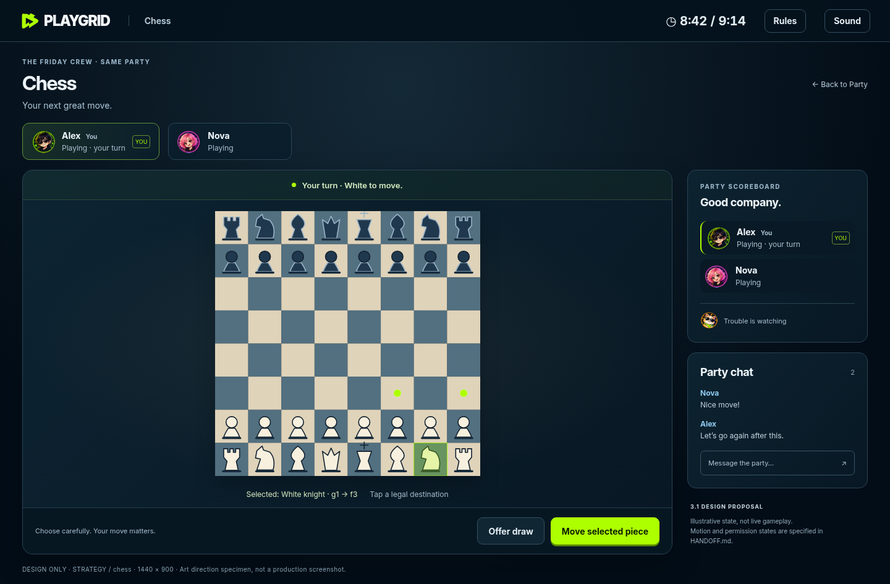
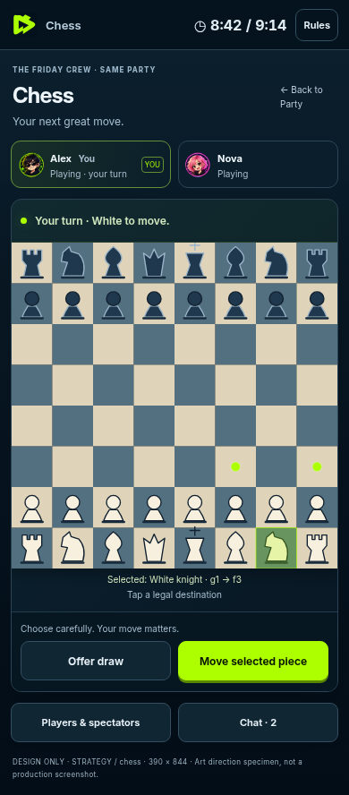
Checkers
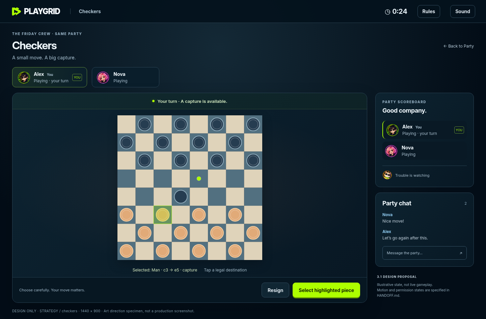
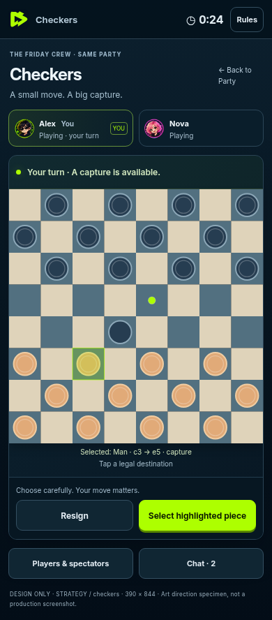
Ludo
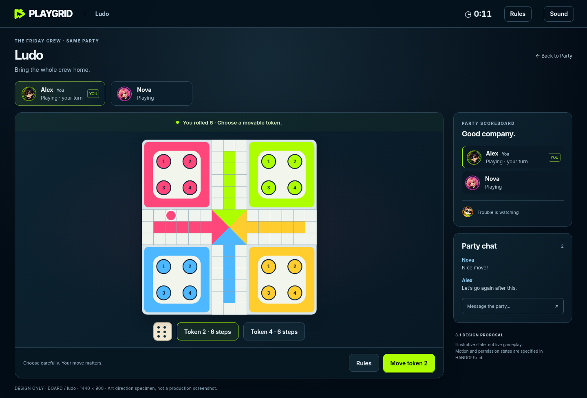
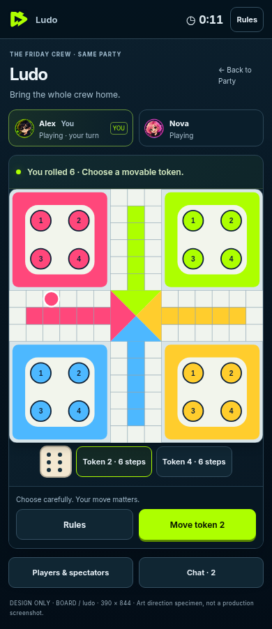
Pool
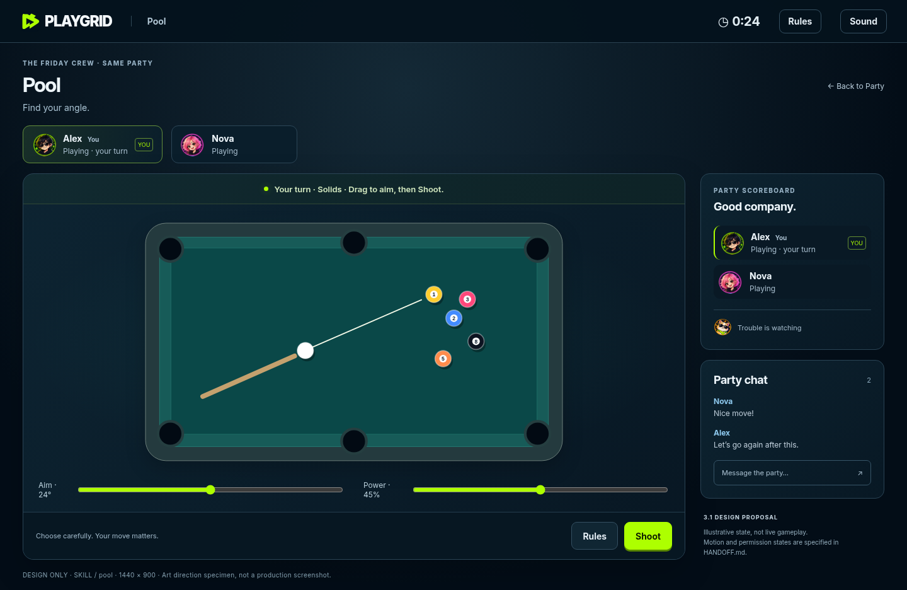
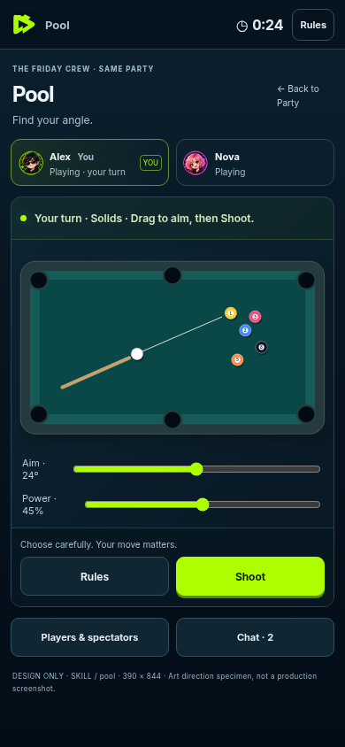
Color Stack
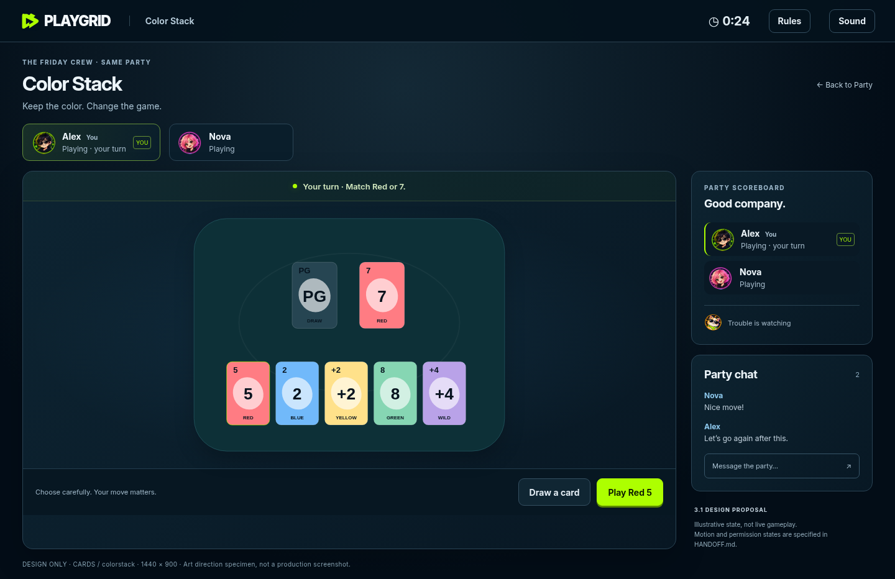
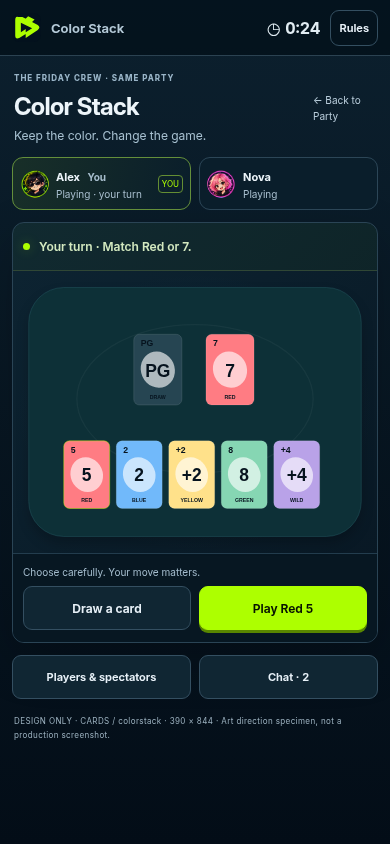
Design proposals · each game has a 1440px desktop and 390px mobile source capture. Not production screenshots.













